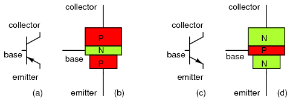
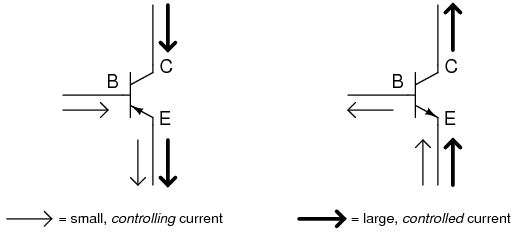
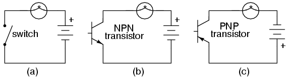
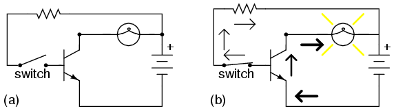
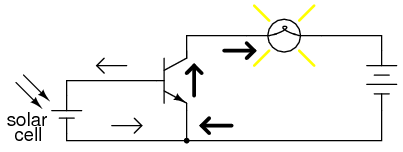
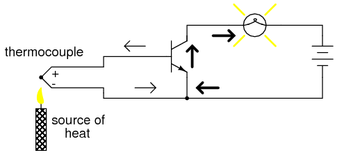
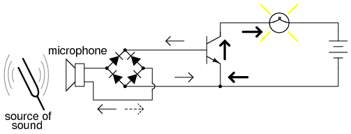
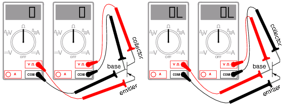

Transistores Bipolares (BJT)
- No linealidad
- Deriva por temperatura
- Fuga térmica
- Capacitancia de unión
- Ruido eléctrico
- Desajuste térmico (problema con transistores en paralelo)
- Efectos de alta frecuencia
Introducción
La invención del transistor bipolar en 1948 marcó el comienzo de una revolución en la electrónica. Proezas técnicas que antes requerían tubos de vacío relativamente grandes, mecánicamente frágiles y consumidores de energía, de repente se pudieron lograr con pequeñas motas de silicio cristalino, mecánicamente resistentes y que ahorran energía. Esta revolución hizo posible el diseño y la fabricación de dispositivos electrónicos livianos y económicos que ahora damos por sentado. Comprender cómo funcionan los transistores es de suma importancia para cualquier persona interesada en comprender la electrónica moderna.
Mi intención aquí es centrarme lo más exclusivamente posible en la función práctica y la aplicación de los transistores bipolares, en lugar de explorar el mundo cuántico de la teoría de los semiconductores. En mi opinión, es mejor dejar las discusiones sobre huecos y electrones para otro capítulo. Aquí quiero explorar cómouseestos componentes, no analizar sus detalles internos íntimos. No pretendo restar importancia a la comprensión de la física de los semiconductores, pero a veces un enfoque intenso en la física del estado sólido resta valor a la comprensión de las funciones de estos dispositivos a nivel de componentes. Sin embargo, al adoptar este enfoque, asumo que el lector posee un cierto conocimiento mínimo de los semiconductores: la diferencia entre semiconductores dopados “P” y “N”, las características funcionales de una unión PN (diodo) y el significado de los términos “polarización inversa” y “polarización directa”. Si estos conceptos no le quedan claros, es mejor consultar los capítulos anteriores de este libro antes de continuar con este.
Un transistor bipolar consta de un “sándwich” de tres capas de materiales semiconductores dopados (extrínsecos), ya sea P-N-P en la Figura below(b) o N-P-N en (d). Cada capa que forma el transistor tiene un nombre específico y cada capa está provista de un contacto de cable para su conexión a un circuito. Los símbolos esquemáticos se muestran en la Figura. below(a) y (d).
{kind=link}

Transistor BJT: (a) símbolo esquemático PNP, (b) diseño físico (c) símbolo NPN, (d) diseño.
La diferencia funcional entre un transistor PNP y un transistor NPN es la polarización (polaridad) adecuada de las uniones cuando están en funcionamiento. Para cualquier estado de operación dado, las direcciones de corriente y las polaridades de voltaje para cada tipo de transistor son exactamente opuestas entre sí.
Los transistores bipolares funcionan como corriente controlada por corriente.reguladores. En otras palabras, los transistores restringen la cantidad de corriente que pasa de acuerdo con una corriente de control más pequeña. La corriente principal que esrevisadova de colector a emisor, o de emisor a colector, dependiendo del tipo de transistor que sea (PNP o NPN, respectivamente). La pequeña corriente quecontrolesla corriente principal va de base a emisor, o de emisor a base, dependiendo nuevamente del tipo de transistor que sea (PNP o NPN, respectivamente). Según los estándares de simbología de semiconductores, la flecha siempre apuntacontrala dirección del flujo de electrones. (Cifra below)
{kind=link}

La corriente de base-emisor pequeña controla la corriente de colector-emisor grande que fluye contra la flecha del emisor.
Los transistores bipolares se llamanbipolares porque el flujo principal de electrones a través de ellos tiene lugar entwotipos de material semiconductor: P y N, ya que la corriente principal va del emisor al colector (o viceversa). En otras palabras, dos tipos de portadores de carga (electrones y huecos) componen esta corriente principal a través del transistor.
Como puedes ver, elcontroladoractual y elrevisadoLa corriente siempre se entrelaza a través del cable emisor y sus electrones siempre fluyen.contrala dirección de la flecha del transistor. Esta es la primera y más importante regla en el uso de transistores: todas las corrientes deben ir en la dirección adecuada para que el dispositivo funcione como regulador de corriente. La pequeña corriente de control generalmente se conoce simplemente comocorriente baseporque es la única corriente que pasa por el cable base del transistor. Por el contrario, la corriente grande y controlada se conoce comocorriente del colectorporque es la única corriente que pasa por el cable colector. La corriente del emisor es la suma de las corrientes de base y colector, cumpliendo la Ley de Corrientes de Kirchhoff.
No hay corriente a través de la base del transistor, lo apaga como un interruptor abierto e impide que la corriente pase por el colector. Una corriente de base enciende el transistor como un interruptor cerrado y permite que una cantidad proporcional de corriente pase por el colector. La corriente del colector está limitada principalmente por la corriente de base, independientemente de la cantidad de voltaje disponible para impulsarla. La siguiente sección explorará con más detalle el uso de transistores bipolares como elementos de conmutación.
- REVISAR:
- Los transistores bipolares se llaman así porque la corriente controlada debe pasar a travéstwotipos de material semiconductor: P y N. La corriente consiste tanto en un flujo de electrones como de huecos, en diferentes partes del transistor.
- Los transistores bipolares constan de una estructura "sándwich" de semiconductores P-N-P o N-P-N.
- Las tres puntas de un transistor bipolar se llamanemisor, Base, yColeccionista.
- Los transistores funcionan como reguladores de corriente al permitir que pase una pequeña corriente.controluna corriente mayor. La cantidad de corriente permitida entre el colector y el emisor está determinada principalmente por la cantidad de corriente que se mueve entre la base y el emisor.
- Para que un transistor funcione correctamente como regulador de corriente, la corriente de control (base) y las corrientes controladas (colector) deben ir en las direcciones adecuadas: engranándose aditivamente en el emisor y yendocontrael símbolo de la flecha del emisor.
El transistor como interruptor
Debido a que la corriente del colector de un transistor está proporcionalmente limitada por su corriente de base, se puede utilizar como una especie de interruptor controlado por corriente. Un flujo relativamente pequeño de electrones enviado a través de la base del transistor tiene la capacidad de ejercer control sobre un flujo mucho mayor de electrones a través del colector.
Supongamos que tenemos una lámpara que queremos encender y apagar con un interruptor. Un circuito de este tipo sería extremadamente simple como en la Figura below(a).
{kind=link}
A modo de ilustración, insertemos un transistor en lugar del interruptor para mostrar cómo puede controlar el flujo de electrones a través de la lámpara. Recuerde que la corriente controlada a través de un transistor debe ir entre el colector y el emisor. Dado que lo que queremos controlar es la corriente que pasa por la lámpara, debemos colocar el colector y el emisor de nuestro transistor donde estaban los dos contactos del interruptor. También debemos asegurarnos de que la corriente de la lámpara se moverá.contrala dirección del símbolo de la flecha del emisor para garantizar que la polarización de la unión del transistor sea correcta como en la Figura below(b).

(a) interruptor mecánico, (b) interruptor de transistor NPN, (c) interruptor de transistor PNP.
También se podría haber elegido un transistor PNP para el trabajo. Su aplicación se muestra en la figura. above(do).
La elección entre NPN y PNP es realmente arbitraria. Lo único que importa es que se mantengan las direcciones de corriente adecuadas para lograr una polarización de unión correcta (el flujo de electrones vacontrala flecha del símbolo del transistor).
Volviendo al transistor NPN de nuestro circuito de ejemplo, nos enfrentamos a la necesidad de añadir algo más para poder tener corriente base. Sin una conexión al cable de base del transistor, la corriente de base será cero y el transistor no podrá encenderse, lo que dará como resultado una lámpara que siempre estará apagada. Recuerde que para un transistor NPN, la corriente de base debe consistir en electrones que fluyen del emisor a la base (contra el símbolo de la flecha del emisor, al igual que la corriente de la lámpara). Quizás lo más sencillo sería conectar un interruptor entre los cables base y colector del transistor como en la Figura below(a).
{kind=link}

Transistor: (a) corte, lámpara apagada; (b) saturado, lámpara encendida.
Si el interruptor está abierto como en la Figura above(a), la base El cable del transistor quedará “flotante” (no conectado a nada) y no pasará corriente a través de él. En este estado, el transistor está se dice que escierre. Si el interruptor está cerrado como en la Figura above(b), los electrones podrán fluir desde el emisor hasta la base del transistor, a través del interruptor, hasta el lado izquierdo de la lámpara y de regreso al lado positivo de la batería. Esta corriente de base permitirá un flujo mucho mayor de electrones desde el emisor hasta el colector, iluminando así la lámpara. En este estado de corriente máxima del circuito, se dice que el transistor estásaturado.
Por supuesto, puede parecer inútil utilizar un transistor de esta capacidad para controlar la lámpara. Después de todo, todavía utilizamos un interruptor en el circuito, ¿no? Si todavía utilizamos un interruptor para controlar la lámpara, aunque sólo sea indirectamente, ¿cuál es el punto de tener un transistor para controlar la corriente? ¿Por qué no volver a nuestro circuito original y usar el interruptor directamente para controlar la corriente de la lámpara?
En realidad, aquí se pueden señalar dos puntos. Primero está el hecho de que cuando se usa en De esta manera, los contactos del interruptor solo necesitan manejar la poca corriente de base necesario encender el transistor; el propio transistor maneja la mayor parte de la corriente de la lámpara. Esto puede ser una ventaja importante si el interruptor tiene una clasificación de corriente baja: se puede usar un pequeño interruptor para controlar un carga de corriente relativamente alta. Más importante aún, el comportamiento de control de corriente del transistor nos permite usar algo completamente diferente para encender o apagar la lámpara. Considere la figura below, donde un par de células solares proporciona 1 V para superar los 0,7 VBEdel transistor para provocar el flujo de corriente de base, que a su vez controla la lámpara.
{kind=link}

La célula solar sirve como sensor de luz.
O podríamos usar un termopar (muchos conectados en serie) para proporcionar la corriente de base necesaria para encender el transistor en la Figura below.
{kind=link}

Un solo termopar proporciona menos de 40 mV. Muchos en serie podrían producir más del transistor V de 0,7 V.BEpara provocar el flujo de corriente de base y la consiguiente corriente del colector a la lámpara.
Incluso un micrófono (Figura below) con suficiente voltaje y salida de corriente (de un amplificador) podría encender el transistor, siempre que su salida esté rectificada de CA a CC de modo que la unión PN emisor-base dentro del transistor siempre esté polarizada directamente:
{kind=link}

La señal del micrófono amplificada se rectifica a CC para polarizar la base del transistor y proporcionar una mayor corriente de colector.
El punto ya debería ser bastante evidente:anySe puede usar una fuente suficiente de corriente continua para encender el transistor, y esa fuente de corriente solo necesita ser una fracción de la corriente necesaria para energizar la lámpara. Aquí vemos el transistor funcionando no sólo como un interruptor, sino como un verdaderoamplificador: usar una señal de potencia relativamente baja paracontroluna cantidad relativamente grande de energía. Tenga en cuenta que la energía real para encender la lámpara proviene de la batería a la derecha del esquema. No es como si la pequeña corriente de señal de la célula solar, el termopar o el micrófono se estuviera transformando mágicamente en una mayor cantidad de energía. Más bien, esas pequeñas fuentes de energía son simplementecontroladorla energía de la batería para encender la lámpara.
- REVISAR:
- Los transistores se pueden utilizar como elementos de conmutación para controlar la alimentación de CC a una carga. La corriente conmutada (controlada) va entre el emisor y el colector; la corriente de control va entre el emisor y la base.
- Cuando un transistor no tiene corriente a través de él, se dice que está en un estado decierre(totalmente no conductor).
- Cuando un transistor tiene una corriente máxima a través de él, se dice que está en un estado desaturación(completamente realizado).
Verificación de un transistor con multímetro
Los transistores bipolares están construidos a partir de un “sándwich” de semiconductores de tres capas, ya sea PNP o NPN. Como tal, los transistores se registran como dos diodos conectados espalda con espalda cuando se prueban con la función de “resistencia” o “verificación de diodo” de un multímetro, como se ilustra en la Figura siguiente. Las lecturas de baja resistencia en la base con los cables negros negativos (-) corresponden a un material tipo N en la base de un transistor PNP. En el símbolo, el material tipo N está "señalado" por la flecha de la unión base-emisor, que es la base para este ejemplo. El emisor tipo P corresponde al otro extremo de la flecha de la unión base-emisor, el emisor. El colector es muy similar al emisor y también es un material tipo P de unión PN.

Verificación del medidor del transistor PNP: (a) adelante B-E, B-C, la resistencia es baja; (b) inversa B-E, B-C, la resistencia es ∞.
Aquí asumo el uso de un multímetro con una sola función de rango de continuidad (resistencia) para verificar las uniones PN. Algunos multímetros están equipados con dos funciones de verificación de continuidad separadas: resistencia y "verificación de diodos", cada una con su propio propósito. Si su medidor tiene una función designada de "verificación de diodo", utilícela en lugar del rango de "resistencia", y el medidor mostrará el voltaje directo real de la unión PN y no solo si conduce corriente o no.
Las lecturas del medidor serán exactamente opuestas, por supuesto, para un transistor NPN, con ambas uniones PN orientadas hacia el otro lado. Las lecturas de baja resistencia con el cable rojo (+) en la base son la condición "opuesta" para el transistor NPN.
Si en esta prueba se utiliza un multímetro con función de “verificación de diodos”, se encontrará que la unión emisor-base posee una caída de tensión directa ligeramente mayor que la unión colector-base. Esta diferencia de voltaje directo se debe a la disparidad en la concentración de dopaje entre las regiones del emisor y del colector del transistor: el emisor es una pieza de material semiconductor mucho más dopado que el colector, lo que hace que su unión con la base produzca una mayor caída de voltaje directo.
Sabiendo esto, es posible determinar qué cable es cuál en un transistor sin marcar. Esto es importante porque, lamentablemente, el embalaje de los transistores no está estandarizado. Todos los transistores bipolares tienen tres cables, por supuesto, pero las posiciones de los tres cables en el paquete físico real no están dispuestas en ningún orden universal y estandarizado.
Supongamos que un técnico encuentra un transistor bipolar y procede a medir la continuidad con un multímetro configurado en el modo de "verificación de diodos". Midiendo entre pares de cables y registrando los valores mostrados por el medidor, el técnico obtiene los datos de la Figura below.
{kind=link}